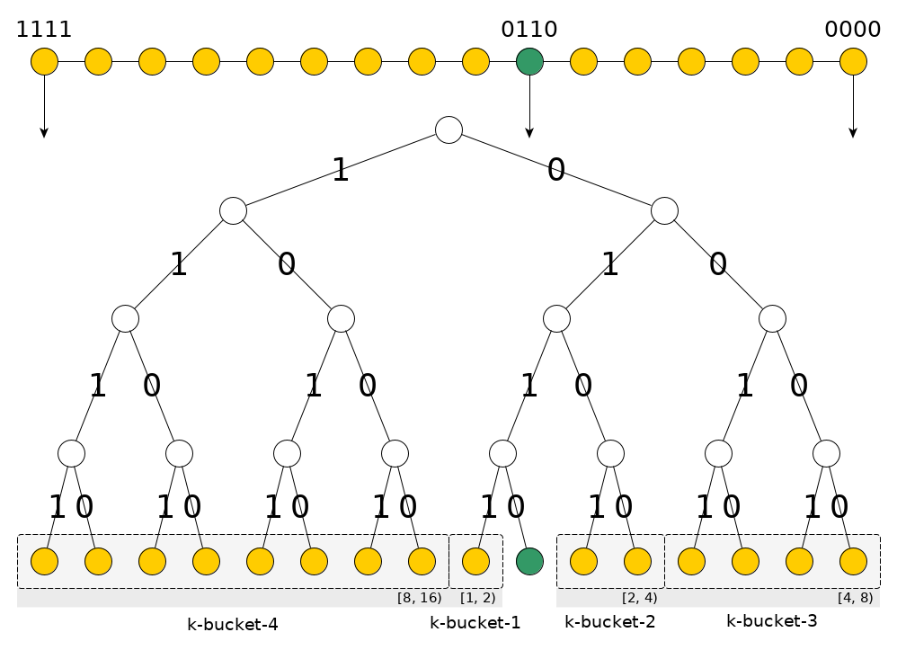

Kademlia 是一种 p2p 网络的分布式哈希表 (DHT: distributed hash table). 有别于单机版的 hash table, p2p DHT 需要将 key-value 键值对存放在大量的 (但不稳定的) p2p 节点上的, 并提供远程的 (RPC) 存取方法.
键空间 (Key Space)
Kademlia 的 key 是 n-bit 的 unsigned int, 故取值范围为 \([0, 2^n-1]\). 例如原论文中使用 160 bits, 又如 ipfs 使用的是 256 bits.
在键空间上定义 “距离” 为两个 key 之间的 异或 (结果仍然为 n-bit unsigned int):
\[ Dis(A, B) = A ⊕ B \]
NOTE: 使用异或作为距离有一些数学属性, 见下面详述, 这里先跳过，我们先看个例子

上图是一个 n 为 4 的示例，其 key 取值为 [0, 15] （或 [0b0000, 0b1111]），以一棵满二叉树的形式呈现.
我们取其中一个 key 来实际计算一下它跟其他 key 之间的距离，例如图中绿色的 \(0b0110\)（下面称之为 G）:
- 在父节点处分岔的 （共一个 key，图中标识为
k-bucket-1）
- \(G ⊕ 0b0111 = 1\)
- 在爷节点处分岔的 （共两个 key，图中标识为
k-bucket-2）
- \(G ⊕ 0b0101 = 3\)
- \(G ⊕ 0b0100 = 2\)
- 在太爷节点处分岔的 (共 4 个 key, 图中标识为
k-bucket-3)
- \(G ⊕ 0b0011 = 5\)
- \(G ⊕ 0b0010 = 4\)
- \(G ⊕ 0b0001 = 7\)
- \(G ⊕ 0b0000 = 6\)
- 在根节点就已经分岔的 （共 8 个 key，图中标识为
k-bucket-4）
- \(G ⊕ 0b1111 = 9\)
- \(G ⊕ 0b1110 = 8\)
- \(G ⊕ 0b1101 = 11\)
- \(G ⊕ 0b1100 = 10\)
- \(G ⊕ 0b1011 = 13\)
- \(G ⊕ 0b1010 = 12\)
- \(G ⊕ 0b1001 = 15\)
- \(G ⊕ 0b1000 = 14\)
可以发现，在这棵二叉树上，跟 G 越亲 （越晚分岔）的 key 距离越近.
其实很好理解，因为越亲的 key 它们二进制表示的共同前缀就越长；反之则共同前缀短，即某个高位就不一致了， 不一致时异或得 1，由于二进制高位权重大，则距离就（大）远了，对比:
- 距离最近的，前 3 位都一致，只有最后一位不一致 \[ \frac{ \begin{align} \quad 0b0110 \\ ⊕ 0b0111 \end{align} }{\quad 0b0001} \]
- 距离最远的，第一位就不一致了（实际每一位都不一致） \[ \frac{ \begin{align} \quad 0b0110 \\ ⊕ 0b1001 \end{align} }{\quad 0b1111} \]
kademlia 将跟 G 二进制共同前缀长度一样的键值归到一个 桶（k-bucket） 里，例如这里 n 为 4，故有 4 个桶；每一个桶里的键值跟 G 的距离处于 \([2^{n-i-1}, 2^{n-i}-1]\) 区间之内（其中 \(i\) 是二进制共同前缀长度）.
TODO ….
异或距离的数学属性
- 任意 key 跟自己的距离是零: \(Dis(A, A) = A ⊕ A = 0\)
- 两个不同的 key 之间的距离大于零: \(Dis(A, B) > 0\)
- 对称的: \(Dis(A, B) = Dis(B, A)\)
- 满足三角不等式, 即给定三个 key, 满足 \[
Dis(A, C) \le Dis(A, B) + Dis(B, C)
\]
- 这是因为 \[ \begin{eqnarray} Dis(A, C) &=& A ⊕ C \\ &=& A ⊕ B ⊕ B ⊕ C \\ &=& Dis(A, B) ⊕ Dis(B, C) \\ &\le& Dis(A, B) + Dis(B, C) \end{eqnarray} \]
- 其中最后一步不等式 \(X ⊕ Y ≤ X + Y\) 是因为异或实际上就是不带进位 (carry) 的加法，故必然小于等于加法得出的结果